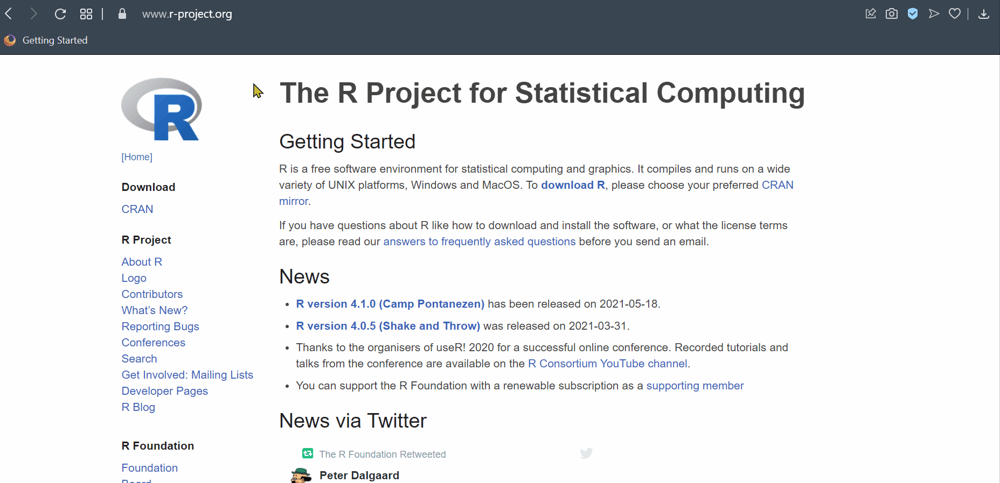
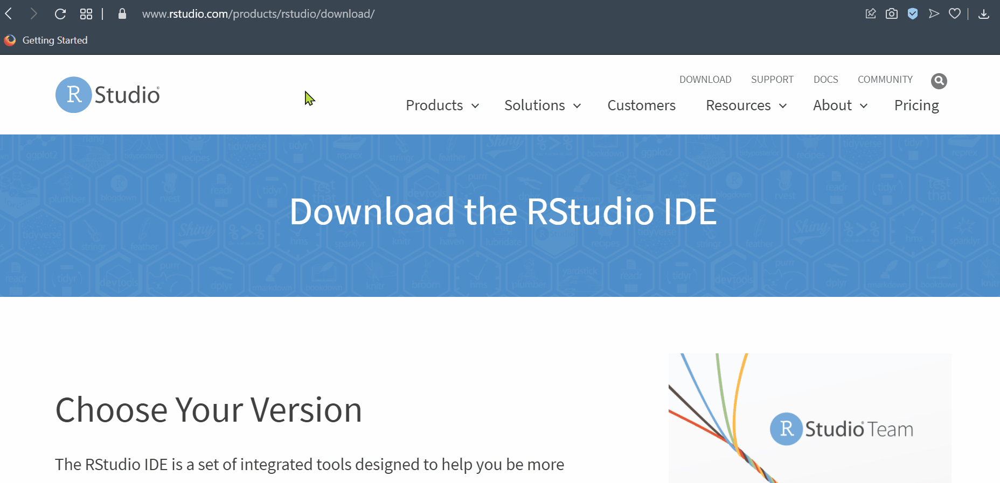
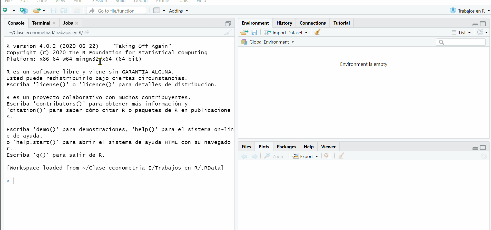

1: Empecemos

En esta lección – vamos a aprender que es R, como se instala y que nos permite hacer cuando se trata de los elementos básicos
Así que, vamos por eso!
Presentación
Para hacer uso de las técnicas cuantitativas y cualitativas en economía y con el objeto de aplicar y mirar lo empírico en Econometría se utilizará el Software de R. El cual es: Un lenguaje de programación de código abierto y que es enfocado en el análisis de datos, especialmente en el tema estadístico. Sus creadores son Robert Gentleman y Ross Ihaka. En el link de https://www.r-project.org/index.html podrá encontrar todo lo relacionado de él.
Los complementos y bases de este curso regularmente son demos de otras bases reales o utilizadas en los distintos textos de econometría que han venido realizando investigación empírica.
Muchos de los comandos y códigos aquí utilizados fueron tomados del sitio web de Florian Heiss: http://www.urfie.net/ que hace referencia al uso de R en la Econometría.
Limitaciones
Como todo software (programa) R posee limitaciones, primeramente es un lenguaje que fue desarrollado en la década de los 80’s y cuando aun no estaba en pleno el Internet y no había mucho desarrollo tecnológico. Entre algunas limitaciones podemos resaltar:
- Uso de memoria física alto.
- Montón de paquetes denominados
packagesy que no son nada uniformes - Con bases de datos enormes (big data) se queda corto y hay que hacer uso de Spark u otros softwares que tienen que ver con SQL.
Primeros pasos
Lo primero es ir a la pagina de https://www.r-project.org e ir a la pestaña de CRAN y descargar la versión de acuerdo al sistema operativo que usted tenga, llamese Linux, Windows o IOS.

Despues de haber instalado el programa, urge ir al link de R Studio que es un potente aliado1 en el entorno de ejecución del programa R, se le denomina IDE Por sus siglas en ingles significa Integrated Drive Electronics, no es mas que un entorno de desarrollo interactivo que facilita interactuar mejor y de manera mas “amigable” con todos los asuntos de los lenguajes de programación.

Debe ir por lo pronto a la sección free, esperar el tiempo de acuerdo a la velocidad de conexión y luego ejecutarlo. Ya después de eso podrá interactuar mejor con R y visualmente todo será mejor para el trabajo.
Script (Bitacoras)
Siempre es bueno crear unas notas de código. Es una especie de cuaderno que le permite tener apuntes o escritos para saber que va haciendo linea a linea, incluso le sirve como un historial de desarrollo, de todas maneras R tiene su propio, pero es altamente recomendable que usted lo maneje de esta forma. Lo puede hacer en formato texto o txt del block de notas en su sistema operativo o también directamente desde el programa de R studio solo presionando las teclas ctrl+shift+N o de esta manera en el menú principal:

Note que R Studio trabaja con 3 ventanas principales, estas son la de consola, Environment y File, todas tienen sus respectivas pestañas que le serán funcionales a la hora de hacer sus proyectos.
di_tu_nombre <- function (nombre) {
paste("Hola y bienvenido(a),", nombre, "! al curso de econometría I")
}
di_tu_nombre("Carlos Andrés")[1] "Hola y bienvenido(a), Carlos Andrés ! al curso de econometría I"Lo anterior es un ejemplo de las múltiples funcionalidades que tiene el programa de R y puede incluso crear sus propios comandas a partir de la opción de function.
Paquetes
El programa de R contiene muchas funciones o formulas que ya vienen códificadas dentro de un conjunto de operaciones que se van a denominar paquetes. Estos deben ser instalados solo una vez y luego cada vez que vayan a ser usados deben cargarse con la función u orden library.
install.packages("tidyverse")
library(tidyverse)Primeros cálculos
Para esta parte del curso, se establecerán algunos cálculos y operaciones básicas ya mostradas en los vídeos tutoriales de la clase y que se encuentran alojados en la carpeta de contenido en el blackboard. Esta primera parte solo tiene cálculos básicos y operaciones de tipo calculadora tal cual el programa así lo permite. Ejemplo:
452+100 # Una suma o adición
1455*sqrt(12) # Producto con la raíz cuadrada de 12
15**2 # Potencia de un número
300/30 # Simple divisiónNote que el (#) es para decirle al programa que no ejecute lo que se encuentra después de él, se usa para tomar notas o escribir algo al respecto, por ejemplo:
# Soy carlos yanesPara la parte de asignación de valores a una variable (X) -puede darle el nombre que le desee colocar- se tiene que:
a<-2
a=2 # También se puede usar el igual
a^2 # El cuadrado de esa variable
abs(a) # Valor absoluto de la variable
sqrt(a) # Raíz cuadrada de la variable
log(a) # Logaritmo natural
log(a,b) # Logaritmo con base al valor b correspondiente,
exp(a) # Valor Exponencial de a
factorial(a) # Factor de aRecuerde que en R todo es un objeto y hay que ir asignando de cierta forma a lo que venimos trabajando, es la manera para ser organizados y no perder de vista calculos que se vienen desarrollando en la lista de aprendizaje.
En economía y en muchas ciencias sociales se hace uso extensivo de las matemáticas y de la estadística. Muchas veces será incluso necesario calcular o realizar algunas transformaciones en las variables para poder tener unas métricas mas informativas como son los logaritmos, valores absolutos, valores de forma exponencial o de notación científica, entre otros. Algunos comandos que se pueden usar en R para eso son:
| Operación | Resultado |
|---|---|
| Valor absoluto | abs() |
| Logaritmo | log() |
| Logaritmo base | log(,) |
| Exponencial | exp() |
| Factorial | factorial() |
| Raíz cuadrada | sqrt() |
El valor absoluto de un número como por ejemplo puede ser simplemente:
abs(-29) # Es el valor absoluto de (-29)[1] 29Sin embargo, en una operación conjunta, si se posee una lista de elementos o un vector de elementos, es mucho mas simple implementarlo de tal forma que:
x<-c(-26,-21,15,-11,-16,18,21,-31,-33, -24) # Lista de valores
abs(x) [1] 26 21 15 11 16 18 21 31 33 24De igual forma, funciona con un logaritmo o también una operación que involucre una de forma de notación científica o exponencial, esto puede notarse así:
y<-c(15,21,23,29,16,28,32,45,33) # Lista de valores para vector Y
log(y) #Se calcula el logaritmo de cada uno de los elementos[1] 2.708050 3.044522 3.135494 3.367296 2.772589 3.332205 3.465736 3.806662
[9] 3.496508Observe que el Programa calcula el logaritmo natural de cada uno de los elementos del vector (y). Para la forma exponencial, es de uso de la notación del logaritmo base e y que muchos conocen como la expresión de Euler, e.g: \(e^{x}\), recuerde ademas que si este lo usamos de tal manera que \(Y=ln(e^{x})=x\). Un ejemplo de aplicación es el siguiente:
\[e^{150}=?\]
x<-150 # Asignamos un valor a la expresión (x)
exp(x) # En R exp hace referencia a la formula de (e)[1] 1.39371e+65Teniendo la asignación de valores a un objeto en R, podemos simplificar el uso o calculo de forma considerable.
Otro ejemplo es el siguiente:
x<-300
algo.que.quiero.escribir<-700
x*algo.que.quiero.escribir[1] 210000Remover objetos en R requiere de la opción de rm() p.e:
rm(x)Si su deseo el limpiar todo el Environment puede hacer uso de rm() y conjuntamente ls()
rm(list=ls())Ambiente de elementos
En R hay distintas formas y maneras de ver variables o asignarlas a un objeto. Con respecto a eso, podemos entonces comenzar a mirar los distintos tipos de variables y datos que tenemos en el entorno de trabajo:
x <- c(0.55, 0.72) ## numérico
x <- c(TRUE, FALSE) ## lógico
x <- c(T, F) ## lógico
x <- c("a", "b", "c") ## cadena
x <- 15:28 ## entero
x <- c(1+0i, 2+3i) ## complejoCon el objeto igual de saber la clasificación del valor en R usted puede hacer uso del comando class. P.e: si tengo la siguiente secuencia:
\[x=\{ 8,9,10,11,\cdots,30\}\] Entonces le decimos a R lo siguiente
x<-8:30
class(x)[1] "integer"Convertir un objeto a otro formato o tipo se puede hacer con la opción de as.numeric y cualquiera de los tipos que se establecieron como ejemplo anteriormente.
as.numeric(x) [1] 8 9 10 11 12 13 14 15 16 17 18 19 20 21 22 23 24 25 26 27 28 29 30Análisis de vectores
Muchas veces los vectores se convierten o consideran como una lista de elementos que finalmente constituyen una columna de una base de datos o dataframe. Para mirar un juego de esto, mire el código a continuación:
# Definimos un vector x para todos los años:
anos<- c(2018,2019,2020,2021,2022,2023)
# Definimos una matriz de y valores:
producto1<-c(10,13,16,19,17,18); producto2<-c(21,32,43,15,19,36); producto3<-c(22,43,42,21,32,21)
# Una forma de unir vectores es con el comando cbind
ventas_mat <- cbind(producto1,producto2,producto3)
# Nombramos las filas con el vector de años:
rownames(ventas_mat) <- anos
# La matriz de datos es:
ventas_mat producto1 producto2 producto3
2018 10 21 22
2019 13 32 43
2020 16 43 42
2021 19 15 21
2022 17 19 32
2023 18 36 21Otra manera o forma de crear datos en R es involucrando los nombres de personas que entrevistamos y obtenemos sus datos. Estos vienen en formato de caracteres y otros de forma numérica. Recuerde que combinar cada uno de los vectores (columnas) se hace con la función cbind que es una especie de (“merge”) o de unión de múltiples elementos (columnas) para formar adecuadamente una base de datos.
# Definimos un vector x para todos los individuos:
individuos<- c("Carlos", "Jose", "Maria", "Susana")
edad<-c(29,41,28,29); estrato<-c(3,4,3,2); civil<-c(1,1,2,3)
datos_mat <- cbind(edad,estrato,civil)
rownames(datos_mat) <- individuos
datos_mat edad estrato civil
Carlos 29 3 1
Jose 41 4 1
Maria 28 3 2
Susana 29 2 3Si por ejemplo queremos el promedio de edad de las personas, es fácil en R decir:
mean(edad)[1] 31.75Factores (variables cualitativas)
En las ciencias sociales siempre es útil tener en cuenta las variables de corte cualitativo, como el genero, estado civil. el tratamiento ideal para esto es haciendo uso del comando o función factor, P.e:
x<- factor(c("Masculino", "Femenino", "Binario", "Masculino", "Masculino", "Femenino"))
table(x) # Para calcular la frecuenciax
Binario Femenino Masculino
1 2 3 Si por algún motivo queremos extraer o tener valores numéricos de las variables podemos entonces tener:
unclass(x)[1] 3 2 1 3 3 2
attr(,"levels")
[1] "Binario" "Femenino" "Masculino"También, se puede hacer a la inversa. Esto es tener la lista o número de valores y luego proceder con el “etiquetado”. En el programa son conocido como niveles o levels. Para mostrar un ejemplo de eso, entonces tendremos:
# Primero tenemos nuestra variable
y<-c(2,2,3,4,5,4,2,1,1,2,5,4,4,3)
# Se especifican las etiquetas en el orden correspondiente
factor_y <- factor(y, labels = c("Pesimo", "Malo",
"Regular", "Bueno", "Excelente"))
# Miramos el resultado
factor_y [1] Malo Malo Regular Bueno Excelente Bueno Malo
[8] Pesimo Pesimo Malo Excelente Bueno Bueno Regular
Levels: Pesimo Malo Regular Bueno ExcelenteFootnotes
Para mayor información consulte la pagina web o enlace de R Studio.↩︎